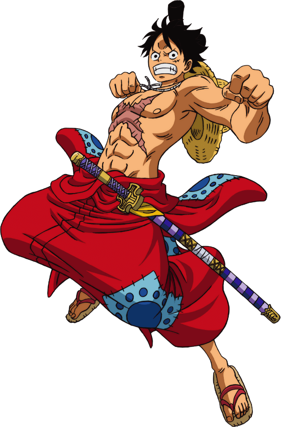

LUFFY - CAPITÃO
Monkey D. Luffy,também conhecido como Luffy Chapéu de Palha ou Chapéu de Palha,é um pirata e o protagonista do anime e mangá One Piece. Ele é o fundador e o capitão do cada vez mais infame e poderoso Piratas do Chapéu de Palha, bem como um de seus principais lutadores. Seu sonho de vida é se tornar o Rei dos Piratas, encontrando o lendário tesouro deixado pelo falecido Rei dos Piratas, Gol D. Roger. Ele acredita que ser o Rei dos Piratas significa ter a maior liberdade do mundo.
Nascido na Vila Foosha, Luffy acidentalmente comeu a Gomu Gomu no Mi aos 7 anos de idade, que deu ao seu corpo propriedades de borracha. Nesta época, Luffy conheceu Shanks, "o Ruivo", que lhe deu seu chapéu de palha como parte de uma promessa para que eles se encontrassem novamente. Luffy é o filho do líder Revolucionário Monkey D. Dragon,neto paterno do herói da Marinha Monkey D. Garp,irmão jurado do falecido "Punhos de Fogo" Portgas D. Ace e do chefe de gabinete Revolucionário Sabo, e filho adotivo de Curly Dadan. Ele é uma das poucas pessoas no mundo que carregam a Vontade de D.
